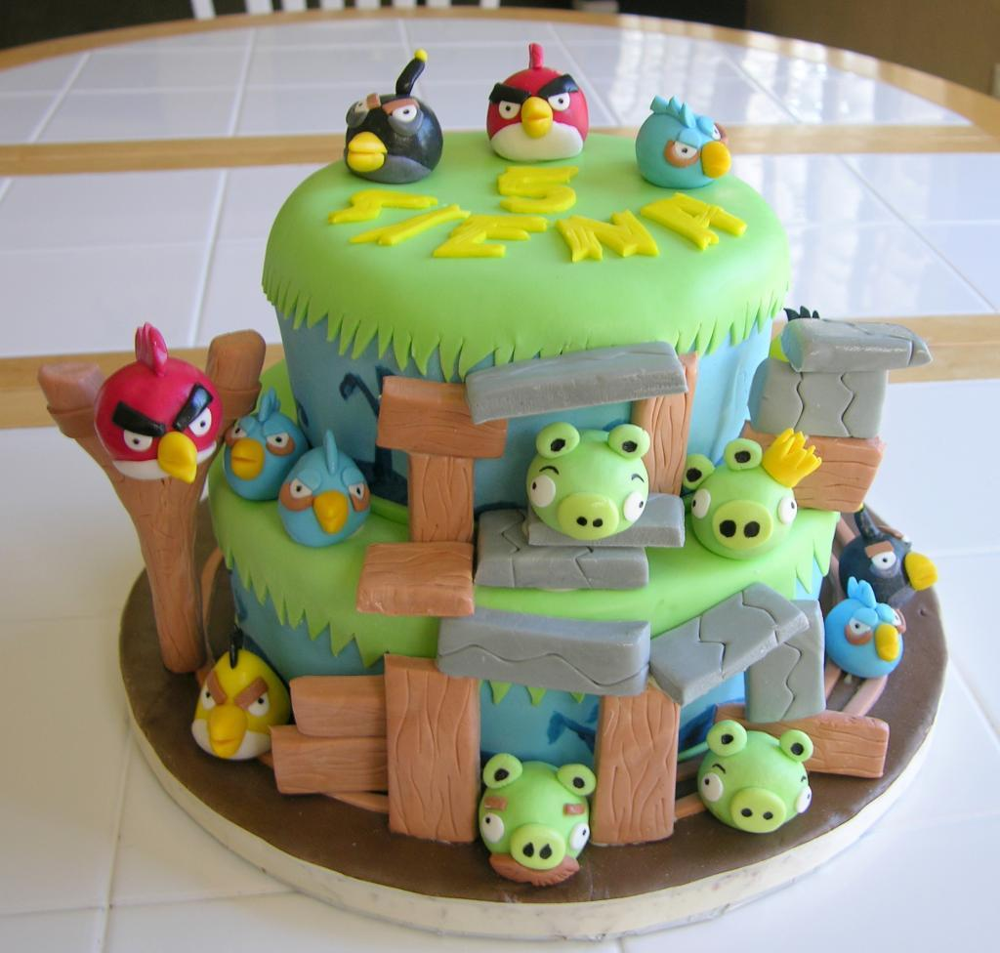
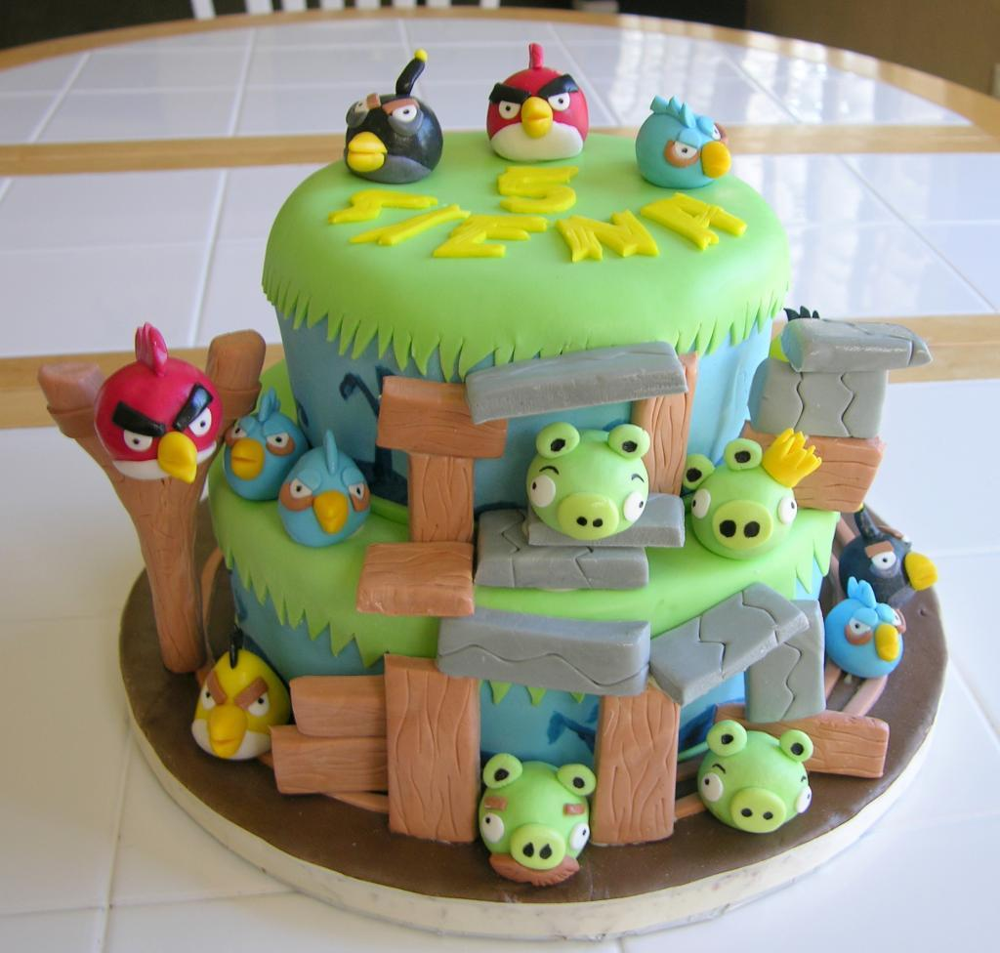

Curiosità
Angry Birds Land

I volatili arrabbiati più famosi del mondo hanno trovato un nido speciale. Si tratta dell’ Angry Birds Land, in Finlandia, un parco divertimenti interamente dedicato al più celebre dei videogiochi della Rovio Entertainment, la società che lo ha creato nel 2009 e che ha raggiunto i 500 milioni di download nel 2011.
Il parco è stato costruito all’interno di Särkänniemi, un grosso adventure park in provincia di Tampere, a Nord di Helsinki. L’area a tema Angry Birds è stata presentata il 28 aprile, ma sarà praticabile soltanto dall’ 8 giugno perché alcune giostre e alcuni percorsi di gioco sono ancora di fase di costruzione e allestimento.
Angry Birds Cakes
I personaggi di Angry Birds hanno ispirato diversi pasticceri, piu' o meno professionali, nella realizzazione di diverse torte il cui tema fossero proprio gli uccelli e maiali protagonisti della serie. Le immagini successive mostrano un paio di esempi.
 
